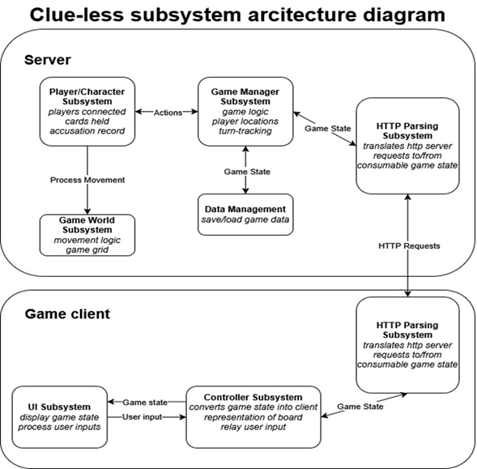
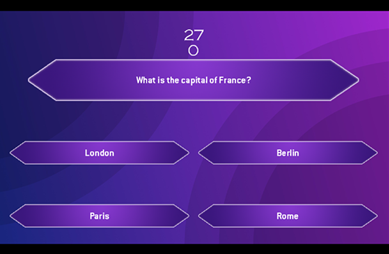

Bio
I build software systems with an emphasis on structure, clarity, and practical usability. My work spans general software engineering, machine learning projects, and game development, with experience across modern languages, libraries, and development environments.
Key Skills
- Languages: Java, Python, C/C++/C#, SQL, Bash, GDScript, Lua
- Libraries & Frameworks: NumPy, pandas, matplotlib, scikit-learn
- Game & Creative Tools: Godot, Unity, Pico-8, Aseprite
- Systems & Tools: Git/GitHub, Linux, CLI tooling, MongoDB
- Software Engineering Object-oriented programming, Algorithm design & analysis, Debugging & unit testing, Agile/Scrum collaboration
- Applied Domains: Machine learning, Natural language processing, data preprocessing and evaluation pipelines
- Communication: Technical writing and documentation, Peer code review, Cross-functional collaboration
Education
M.S. Computer Science (AI Focus), Johns Hopkins University - expected graduation 2026
B.S. Computer Science, University of Maryland Global Campus - 2023, GPA 3.7
B.S. Psychology, Virginia Tech - 2013
Professional Experience
Course Support Assistant (2025-Present)
- Supported faculty, instructional designers, and course support specialists in the creation of WCAG-compliant learning materials for online courses in numerous disciplines
- Converted outdated course materials to modern accessible formats
DoorDash Delivery Driver (2025)
- Independently managed real-time logistics to deliver orders quickly and accurately, maintained excellent customer ratings, and adapted routes on the fly to maximize efficiency and on-time performance
Full-Time Family Caregiver (2013-2023)
- Provided round-the-clock caregiving for an ill family member, demonstrating resilience, self-direction, and disciplined time management.
Research Assistant, Department of Computer Science, Virginia Tech (2012)
- Coordinated multi-session user-experience studies; prepared hardware/software labs and processed datasets for statistical analysis.
Leadership & Service
- Kappa Kappa Psi, Eta Beta Chapter - Managed event logisitcs and community outreach for campus bands
- Trumpeter, Marching Virginians - Peformed in 15+ NCAA football halftime shows before 60k-seat crowds
Projects
Reinforcement Learning: Racetrack Control — Python / Numpy / pandas | December 2025
- Implemented Value Iteration, Q-Learning, and SARSA in a stochastic racetrack environment with velocity-based state space and collision detection
- Designed experiments across multiple track geometries and crash penalties to analyze on- vs. off-policy learning behavior
- Demonstrated safety-performance tradeoffs, showing risk-seeking Q-Learning vs. conservative SARSA under harsh penalties
Neural Networks & Autoencoder Pretraining — Python / Numpy / pandas | November 2025
- Implemented linear/logistic regression, feedforward neural networks, and autoencoder-pretrained models from scratch
- Compared architectures on classification and regression tasks using 5x2 cross-validation
- Showed that autoencoder pretraining improves generalization on noisy, nonlinear regression problems
Decision Trees with Reduced-Error Pruning — Python / Numpy / pandas | October 2025
- Implemented classification and regression trees using gain ratio and MSE split criteria
- Added reduced-error pruning with held-out validation to control overfitting and improve generalization
- Achieved large reductions in tree depth with little or no loss in accuracy, and improved MSE on noisy regression tasks
Nonparametric Models: k-Nearest Neighbors — Python / Numpy / pandas | September 2025
- Built an end-to-end KNN pipeline with normalization, categorical distances (VDM), kernel regression, and null baselines
- Implemented edited nearest neighbor pruning, significantly reducing dataset size with minimal accuracy loss
- Evaluated models using 5x2 cross-validation across six classification and regression datasets
Clue-Less — Godot 4 / C# | Team of 5 | January - March 2025
- Designed a simplified version of the classic board game CLUE
- Developed intuitive gameplay systems and custom assets with fresh but familiar themes
- Utilized networking libraries to create an engaging multiplayer experience



TRIVIAGPT — Java / libGDX / OpenAI API / MongoDB | Team of 6 | June - August 2023
- Architected a full-stack trivia game that generates dynamic questions via OpenAI API, increasing replayability 5x
- Built RESTful micro-service with MongoDB backend for game-state and player data
- Managed GitHub feature-branch workflow and code reviews to uphold project quality and reduce defects

Personal Media Server — Jellyfin / MakeMKV / Linux (Raspberry Pi) / Bash | August 2025
- Built a self-hosted streaming stack with Jellyfin on a Raspberry Pi to consolidate outdated media
- Crafted Bash pipeline to automate disc handling: ripping with MakeMKV, converting to H.264, and moving/organizing outputs into Jellyfin-friendly library structure
- Leveraged Linux CLI tools to implement logging, manage storage mounts/permissions, and automatic cleanup of empty work directories
2-D Platformer Prototype — Godot 4 / GDScript | November - December 2024
- Developed custom physics, collision detection, and state-machine-driven gameplay loop in Godot 4
Custom Compiler — C / Flex / Bison | March - May 2023
- Designed lexical analyzer and LL parser for a bespoke language; emitted LLVM-compatible byte-code and achieved >95% automated test-suite pass rate
- Implemented symbol, literal, and error tables to support semantic analysis and detailed compiler diagnostics
Contact Information
Email: christopher.j.snelling@gmail.com
LinkedIn: https://www.linkedin.com/in/christopher-snelling
© 2026 Christopher Snelling. All rights reserved.